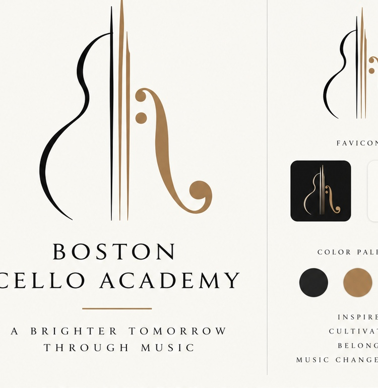
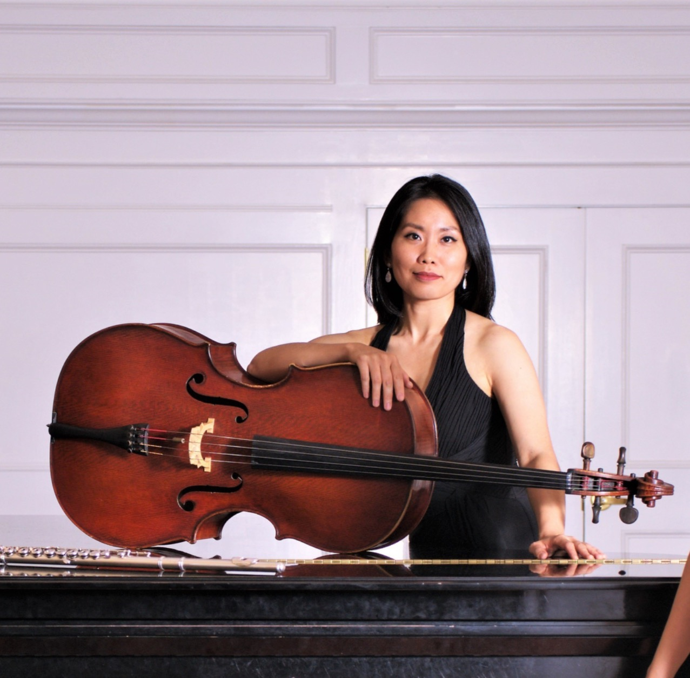
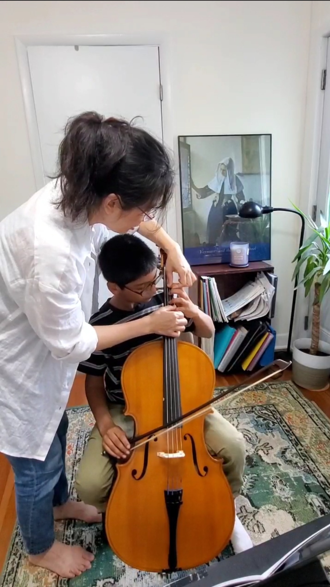
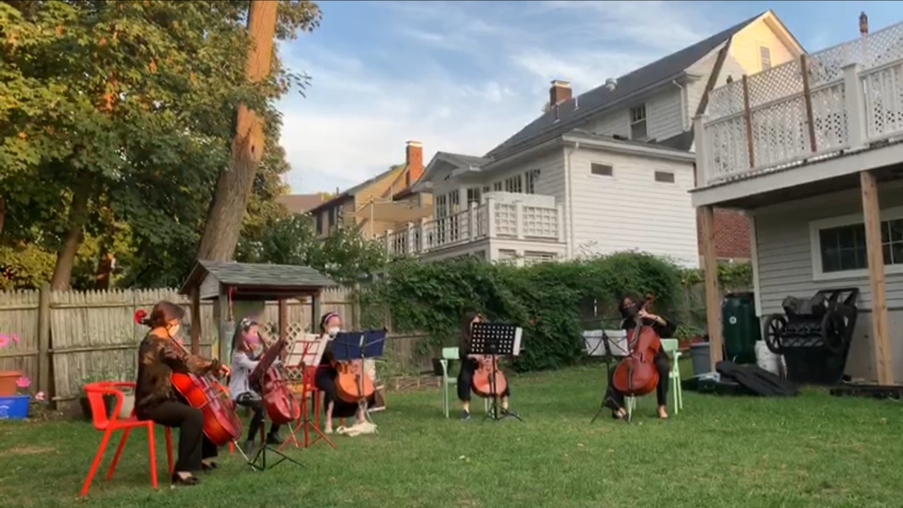
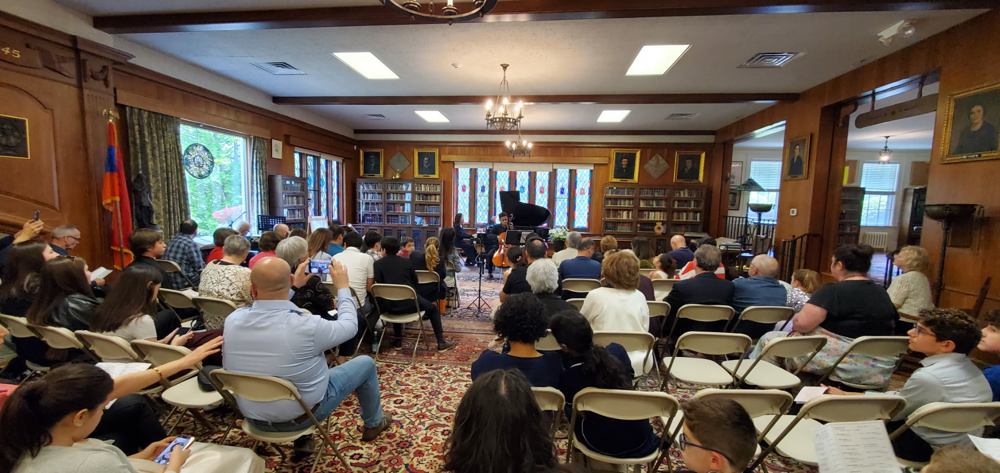
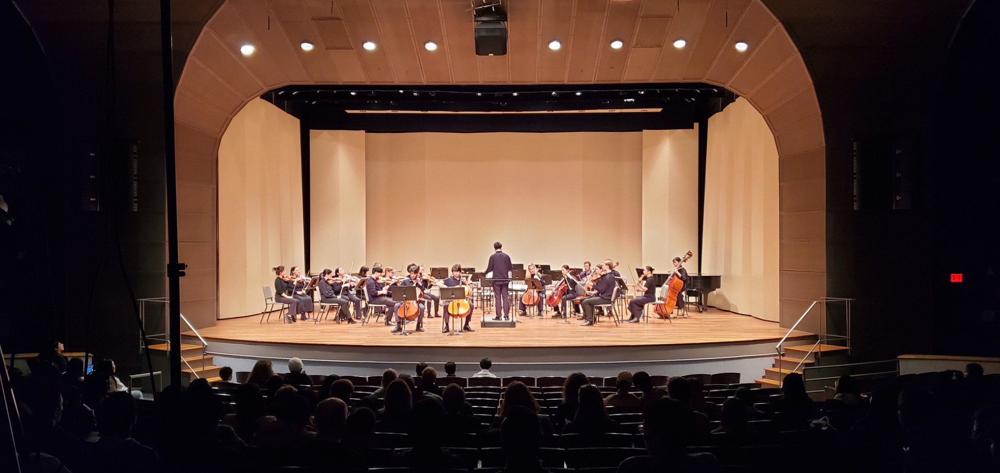
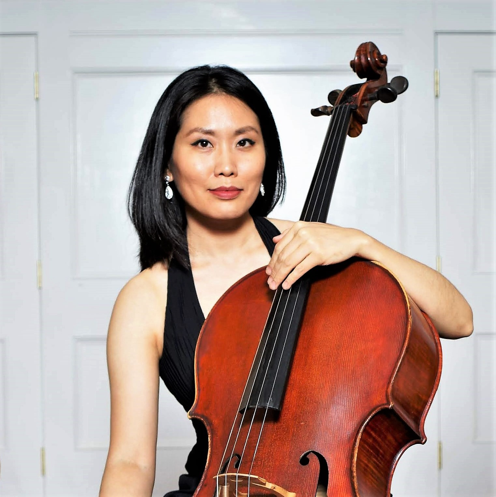

Strong foundations
Ergonomics, tone production, rhythm, intonation, coordination, and efficient practice habits create freedom at the instrument.

BOSTON · CELLO · ARTISTRY
Individualized cello instruction for children, teens, and adults—grounded in healthy technique, thoughtful musicianship, and the joy of making music.

THE BCA APPROACH
At Boston Cello Academy, students learn more than notes and exercises. They develop a healthy relationship with the instrument, understand how the body creates sound, and learn to listen, think, and communicate like musicians.
Ergonomics, tone production, rhythm, intonation, coordination, and efficient practice habits create freedom at the instrument.
Students learn how to listen critically, solve problems, understand phrasing, and make thoughtful musical decisions.
Piano accompaniment, ensemble playing, and collaborative skills help students experience music as a shared language.
Studio concerts and performance preparation give students meaningful goals and opportunities to share their progress.
A COMPLETE MUSICAL JOURNEY
Private study is only the beginning. Students develop their skills through collaboration, ensemble playing, recitals, and increasingly ambitious musical experiences.

Personalized guidance, careful listening, and a technical foundation tailored to each student.

Learning to listen, lead, follow, breathe, and create music together.

Celebrating progress through focused preparation and meaningful live performance.

Building the musicianship, confidence, and experience to take music beyond the studio.
Music builds character, connection, and a more beautiful world.

MEET YOUR TEACHER
Cellist. Educator. Mentor.
Boston-based cellist Cherry Kim brings the perspective of an active professional performer together with a deeply personal approach to teaching. She holds a Doctor of Musical Arts degree in cello performance from Boston University and has performed as a soloist, chamber musician, and orchestral cellist in the U.S. and internationally.
Her teaching emphasizes strong fundamentals, natural physical coordination, beautiful sound, effective practice, and musical independence. Students are encouraged not only to play the cello well, but to understand what they are doing and why.
Whether working with a young beginner, an advancing student, or an adult returning to music, her aim is to develop confident, curious musicians who can carry their skills and love of music forward.
Study with Dr. Kim →PRIVATE CELLO STUDY
Age-appropriate instruction that develops concentration, confidence, coordination, listening, and musical imagination alongside solid cello fundamentals.
Detailed technical and musical work, repertoire development, audition or ensemble preparation, and the tools to become increasingly independent.
Thoughtful, efficient instruction for adults beginning the cello, returning after time away, or seeking a deeper and more satisfying way to play.
STUDENTS & FAMILIES
“Cherry is picky on technique but is fun and creative... the dosage of strictness is just right enough to drive an individual to progress further.”— Susan S.
“Her dedication and devotion to students have really impressed us... We feel so lucky to have her as our daughter’s cello teacher.”— Amy L.
“As an adult learner, she was super patient but thorough... I progressed much more than I was expecting.”— Shabnam G.
LET'S TALK
Tell me a little about yourself or your child, previous musical experience, and what you hope to accomplish. I’ll be in touch about the next step.
Boston Cello Academy · Greater Boston, Massachusetts